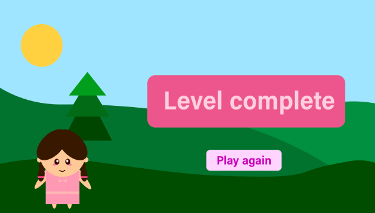

Denne temaopgave vi blev stillet overfor indeholdte mere komplicerede og nye teknikker. Vi lærte om faglig viden indenfor karakterdesign, baggrundsdesign, rule og thirds og designstilarter indenfor animation. Derudover blev vi introduceret til optagelse af lyd, redigering af lyd i Adobe Audition samt eksportering af den redigerede lyd.
Yderligere blev vi også introduceret til javascript, samt de funktioner og elementer vi skulle implementere i vores kodning til spillet. Jeg synes det var et mere kompliceret kodning, som ikke altid vil give mig det resultat jeg ønskede.
I mit design valgte jeg har have et atmosfærisk perspektiv med en forgrund, mellemgrund og baggrund, der havde en lysere og koldere betoning, jo længere væk fra forgrunden man bevægede sig.
Ydermere havde jeg valgt flat design med elementer fra kawaii 4 stilen. Jeg implementerede baby bias, falde former, symmetriske figurer med twinning princippet, der følger bouba effekten.
